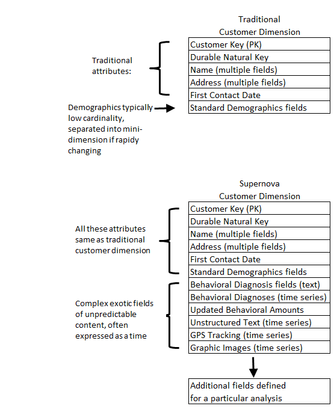

Data warehousing has never been more valuable and interesting than it is now. Making decisions based on data is so fundamental and obvious that the current generation of business users and data warehouse designers/implementers can’t imagine a world without access to data. I’ll resist the urge to tell stories about what it was like before 1980.
But this is a time of change for the practice of data warehousing. It is essential that “data warehousing†always encompasses the gathering of business needs and the enumeration of all the data assets of an organization in the broadest possible senses. If data warehousing is ever relegated to just reporting text and number data out of transaction systems of record, then huge opportunities will be lost.
Data warehousing has defined an architecture for Publishing the Right Data to decision makers, and that architecture has names: dimensional modeling, fact tables, dimension tables, surrogate keys, slowly changing dimensions, conformed dimensions, and many more.
Big changes are occurring today in the business world, with new torrents of data from social media, free text, sensors and meters, geo-positioning devices, satellites, cameras, and other recording devices. Business users are expecting to make decisions based on these data sources. Marketing, the traditional driver of data warehousing, is now competing with manufacturing, operations, and research. Many of these departments new to data analysis are building their own systems, often in good faith, but ignorant of the deep legacy and accumulated architectural skills of data warehousing. It is incumbent on the data warehouse community to meet these new business users half way, not only to offer our useful perspectives, but for us to learn about these new business areas.
In this, my final Kimball Group Design Tip, I’ll describe how I think the main components of data warehousing are changing and will change in the near future. It’s an exciting and challenging time to be a data warehouse professional!
The Future of ETL
If data warehousing is going to encompass all the data assets of an organization, then it must deal with the immense new torrents of strangely structured data. Several big changes must take place in the ETL environment. First, the data feeds from original sources must support huge bandwidths, at least gigabytes per second. Learn about Sqoop loading data into Hadoop. If these words mean nothing to you, you have some reading to do! Start with Wikipedia. Second, many of the analytic clients for these new data streams insist that no transformations be applied to the incoming data. In other words, the ETL landing zone must be able to store files consisting of un-interpreted bits with no assumptions made about how that file will be stored in a database or analyzed. Third, the storage architecture must be open so that multiple diverse decision support tools and analytic clients can access the data through a universal metadata layer. And fourth, the metadata descriptions of data files of all types must be much more extensible, customizable and powerful as new complex data sources are made available. We have gone far too long with simple text-and-number RDBMS files where the metadata contained in RDBMS system files has little or no semantics.
The proprietary stacks of mainline RDBMSs will be challenged to be pried apart into separate storage, metadata, and query layers. This has already happened in the Hadoop open source environment under the Hadoop Distributed File System (HDFS). This means that ETL processing in some cases can be delayed until a point in time after the data is loaded into accessible files. Query and analysis tools, through the metadata, may wish to declare the target schema at query time as a kind of powerful “view†at query time, not at load time. As exotic as this “schema on read†sounds, this is just another form of data virtualization which we have used for more than a decade. The tradeoff in all these forms of data virtualization is that by substituting computation for ETL data restructuring, one pays a significant performance penalty. At some point after an exploratory query phase, the designer will usually loop back and do normal ETL processing to prepare more performant file structures.
The Future of Database Technology
Relational databases are the bedrock of data warehousing and will always be such. But RDBMSs will never be extended to natively process all the new data types. Many specialty analytic tools will compete with each other to analyze the data, and gracefully coexist with RDBMS databases that will cherry pick the parts of the incoming data streams that relational databases can handle.
On a related topic, archiving will never be the same. Disk storage has won the war for the long term archiving choice for many reasons, but the biggest factor is the amazing low cost per petabyte. Additionally disk storage is always online, thus the archived data remains active and accessible, awaiting new analysis modes, and new retrospective questions. This is called “active archiving.â€
The Future of Dimensional Modeling
Even in the brave new world of strange data types and non-relational processing, dimensional modeling is enormously relevant. Even the most bizarre data types can be thought of as a set of observations recorded in the real world. These observations always have context: date, time, location, customer/person/patient, action, and the list goes on. These, of course, are our familiar dimensions. When we realize this, suddenly all the familiar dimensional machinery kicks in. We can attach high quality curated dimensions from our EDW to any data source. Expand your minds: this attachment doesn’t have to be through a conventional relational database join, because the correspondence can be made in other ways.
Dimensions, of course, are the soul of the data warehouse. Facts are merely observations that always exist in a dimensional context. Going forward, we can expect dimensions to become more powerful in order to support more sophisticated behavior based queries and predictive analytics. Already there have been proposals for generalizing the star schema to a supernova schema. In a supernova schema, dimensional attributes are allowed to become complex objects rather than simple text. Supernova dimensions also become much more malleable and extensible from one analysis to another. Contrast the traditional customer dimension with the supernova customer dimension in Figure 1. Note that much of this is not future pie-in-the-sky. You can generalize a single dimension attribute today with an ARRAY of STRUCTS. Time to read the SQL reference manual.

Figure 1: Traditional and Supernova Customer Dimensions.
The Future of BI Tools
The space of BI tools will grow to include many non-SQL kinds of analysis. Of course this has already happened, especially in the open source Hadoop environment, and we have always relied on powerful non-SQL tools such as SAS. So in some ways this is a matter of definition of what is a BI tool. I am arguing this point mainly to prod data warehouse teams to expand their scope and not get left out of the new data sources and new kinds of analysis.
The Future of Data Warehouse Professionals
I have remarked many times that a successful data warehouse professional must be interested in three things: the business, the technology, and the business users. This will always be true in the future. If you want to spend your time coding and not talking to business users, that’s great but you don’t belong on the data warehouse team. Having said that, data warehouse professionals going forward need to have Unix and Java skills at a minimum, and familiarity with some of the principal non-SQL analytic environments such as Spark, MongoDB, and HBase, as well as data transfer tools such as Sqoop.
I think the big exciting challenge going forward is the expansion of the data warehouse professional’s job description. New departments are suddenly appearing who are trying to grapple with torrents of data, and are probably reinventing the data warehouse wheel. Find out who these departments are and educate them about the power of conformed dimensions and surrogate keys. Offer to attach your high quality EDW dimensions to their data.
And as Margy says: Go forth and be dimensional